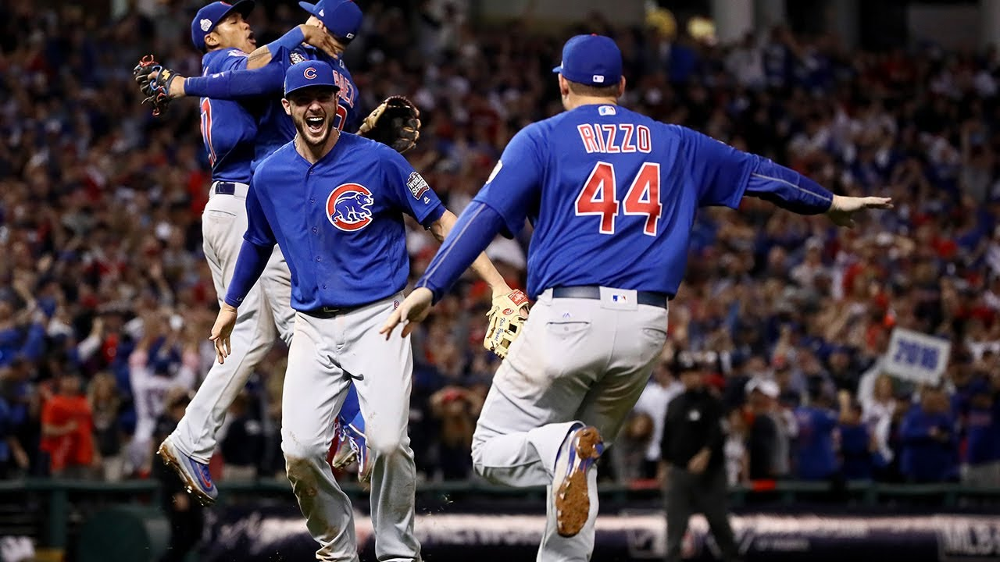

Louis Sorrenti
@louis_sorrenti • Nov 3rd
LETS GOOOOOOOO!!!!! THE CUBS WON THE WORLD SERIES 1 YEAR AFTER THE PREDICTION!!!!

Chicago Cubs win first World Series title since 1908, snap "curse"
On November 2, 2016, the Chicago Cubs win their first World Series championship since 1908,
beating the Cleveland Indians, 8-7, in a thrilling Game 7 delayed by rain. "Let It Reign,"
reads the headline in the next day's Chicago Tribune sports section.
The win snaps the “Billy Goat Curse,” one of the more infamous sports curses,
and baseball's longest World Series title drought.